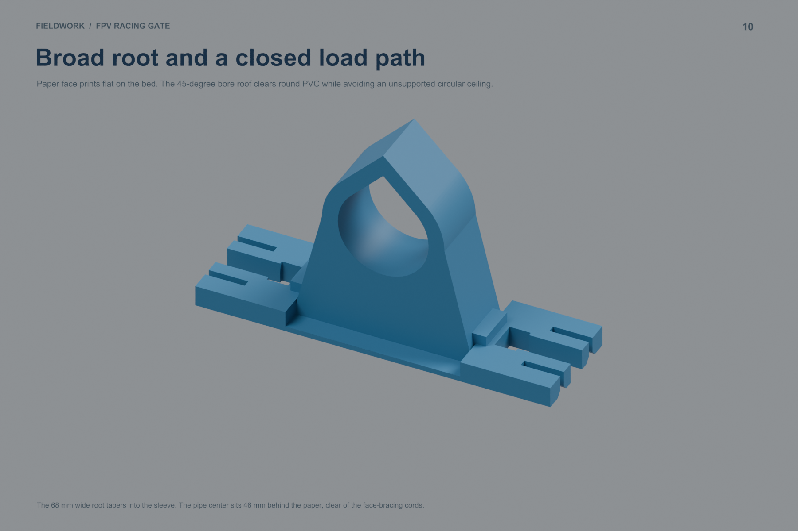
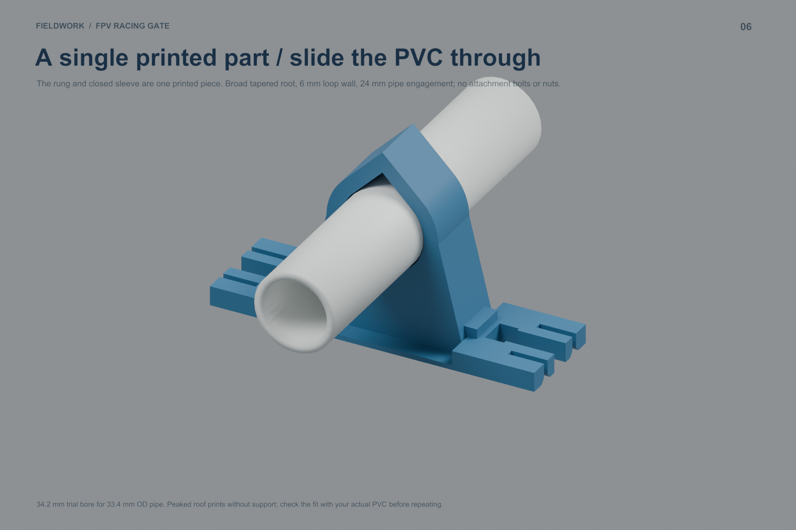
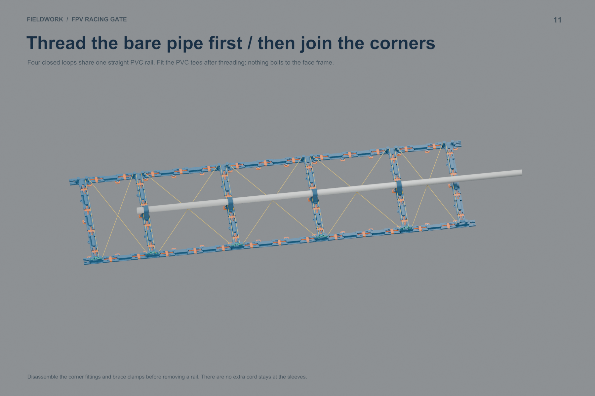
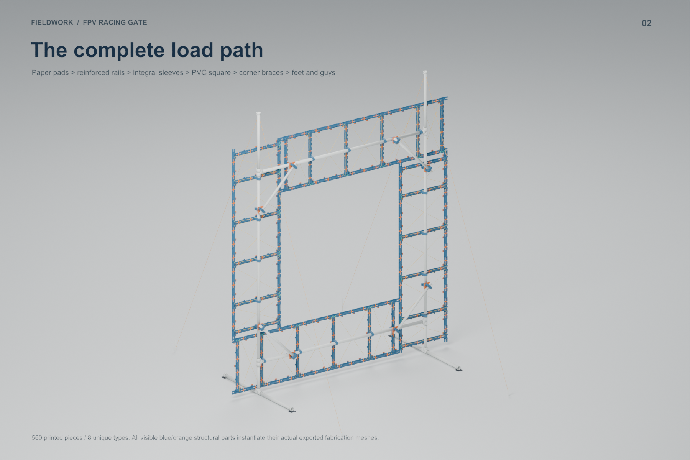
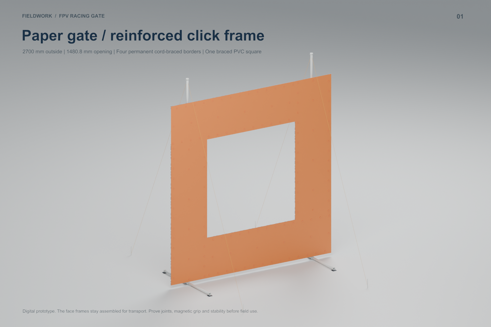
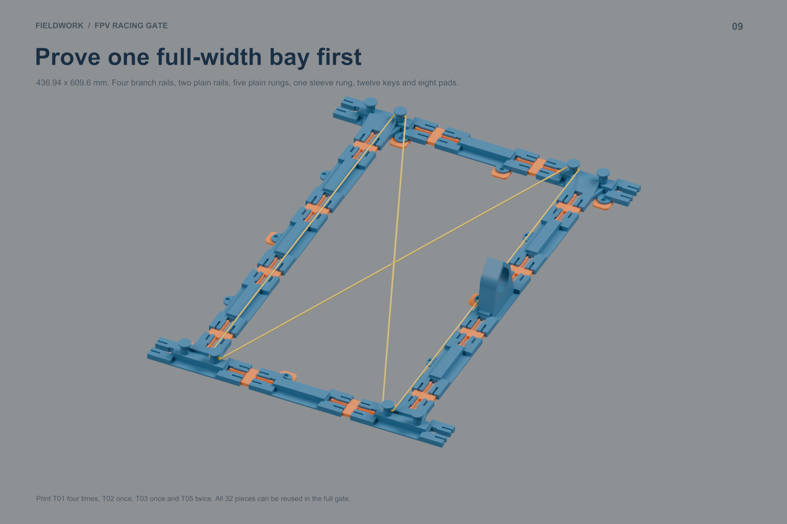

The pipe threads directly through a closed loop. A broad tapered base replaces the separate bolted dock. Four sleeves per border, sixteen per gate. No extra cord stays.
Blender assembly · Assembly PDF · Detailed guide · Download kit
133.9 × 50 × 78.7 mm print envelope; 34.2 mm trial bore for 33.4 mm OD PVC; 6 mm loop wall; 24 mm sleeve length. The peaked roof prints without internal support. Check actual pipe fit before printing sixteen.






With optional front pads: 560 pieces / 8 production types / 6.995 kg PETG / 286.0 printer-hours / 105 plate runs. Plan eight 1 kg spools with allowance. This removes 64 printed dock pieces and all 96 M3 face-attachment bolts. PVC corner/brace hardware remains in the updated hardware list.
Without optional front pads: 424 pieces / 7 types / 6.792 kg PETG / 277.2 printer-hours / 101 runs. The frame-side magnet holders retain their 0.4 mm plastic skin. The peaked sleeve roof is unchanged. Both options use 272 magnets.
Thread straight pipes before fitting the PVC corners. Support the borders while closing the square. Teardown requires releasing corner fittings before sliding pipes out. Digital prototype; physical fit, durability and stability remain to be tested.
Printed BOM · Hardware · Pipe cuts · All plate runs · Validation
| Production recipe | Runs | g/run | min/run |
|---|---|---|---|
| Q_EDGE_PLAIN_FULL | 21 | 73.2 | 170 |
| Q_EDGE_PLAIN_TAIL | 1 | 24.5 | 62 |
| Q_EDGE_BRANCH_FULL | 24 | 73.4 | 180 |
| Q_RUNG_FULL | 18 | 72.0 | 168 |
| Q_RUNG_TAIL | 1 | 48.0 | 114 |
| Q_CLICK_KEY_FULL | 25 | 26.9 | 86 |
| Q_PAPER_PAD_FULL | 3 | 53.6 | 140 |
| Q_PAPER_PAD_TAIL | 1 | 41.7 | 110 |
| Q_RUNG_SLEEVE_FULL | 5 | 148.1 | 349 |
| Q_RUNG_SLEEVE_TAIL | 1 | 49.4 | 140 |
| Q_V_BLOCK_FULL | 2 | 194.4 | 441 |
| Q_V_BLOCK_TAIL | 1 | 129.6 | 297 |
| Q_CROSS_PLATE_FULL | 2 | 70.8 | 155 |